A real stock card for every product: opening balance, every receipt and delivery with its move type and bill or invoice number, running balance and stock value. One SQL engine feeds an interactive web page, a clean PDF and an Excel workbook, in English and Arabic.
Auditors, storekeepers and accountants all ask the same question: how did this product get from its opening quantity to today’s balance, and what is it worth?
Four steps, no configuration.
Every screenshot was taken on a running Odoo 18 demo database: My Company (San Francisco), warehouse YourCompany, October 1–26, 2026, timezone Asia/Riyadh. The history of three office-furniture products was entered through the normal Odoo flows: purchase orders with posted vendor bills, sales orders with invoices, a sales return and a purchase return with their credit notes, scraps and inventory counts. Every output shows the same totals (stock value $ 3,948.75).
Inventory › Reporting › Stock Card, next to Odoo’s own Stock report. One menu entry opens the wizard; everything else (web page, PDF, Excel) starts from there.
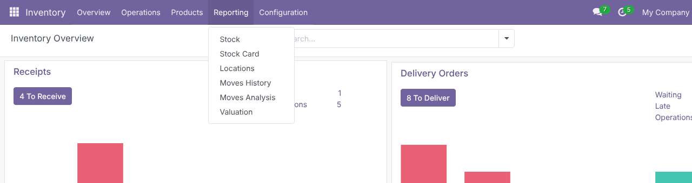
Report Type: Detailed Moves or Totals per Period, with Totals Interval Daily, Weekly, Monthly or Full Period. Date From / Date To are read in your timezone. Scope by Company, Warehouse or several Locations (with Include Sub-locations), optionally Split by Location. Filter Product Categories (sub-categories included) and Products, keep Storable Products Only (products with Track Inventory), and switch Show Valuation on or off.
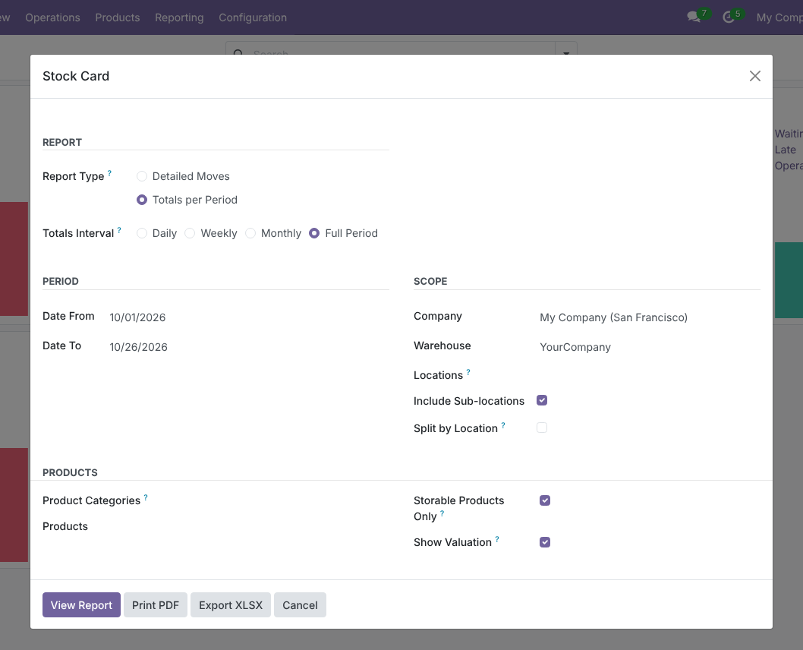
One collapsible card per product with its unit of measure, Opening, Movements and Unit Cost; the lines of a card load only when you open it. Columns: Date, Reference / Origin, Move Type, Source Location, Destination Location, In Quantity, Out Quantity, Running Balance, Balance Value. Under a PO or SO origin you see the posted bill or invoice (P00021 · BILL/2026/10/0002), and one click opens it. Click a reference to open the transfer or move, the product name to open the product. Quick search, Expand all / Collapse all, and chips that recall the filters and the total Stock Value.
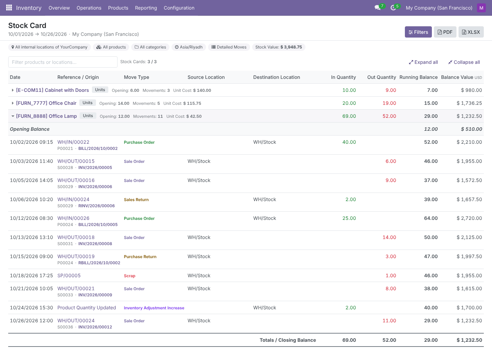
Totals per Period drops the individual moves: one line per bucket with Date (or Period), In Quantity, Out Quantity, Running Balance and Balance Value, between the opening and closing rows. Weeks start on the first weekday of your language; partial first and last periods are labelled with the dates they really cover. Full Period gives exactly one line per product for the whole range, including products that have stock but did not move.
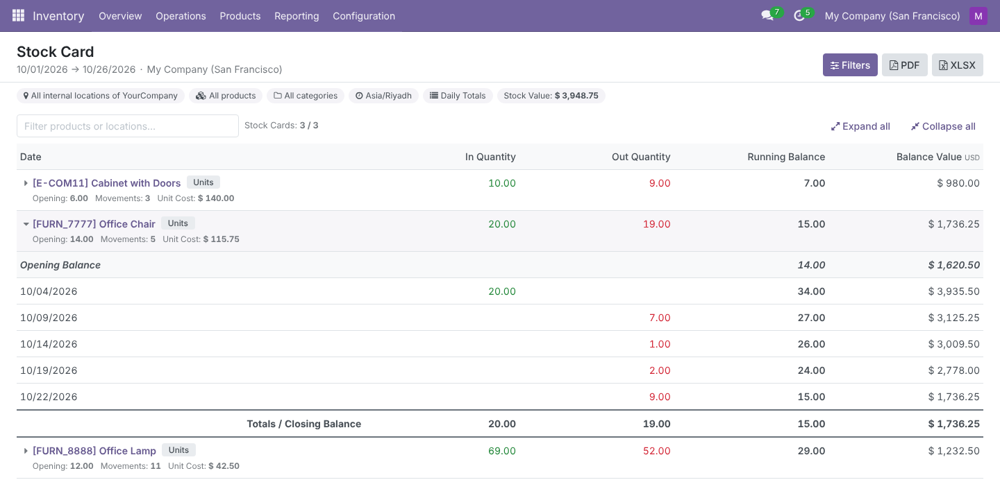
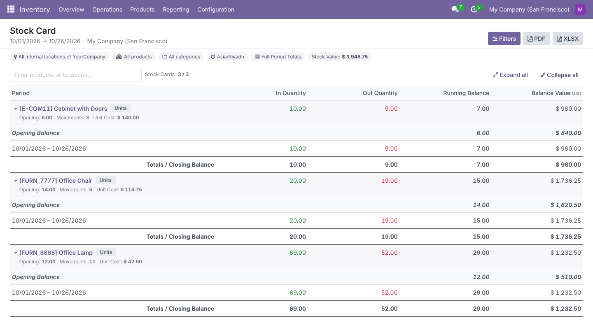
A4 landscape with its own fixed header (logo, company address and Tax ID, title, period) that never overlaps the table, filter tiles with Stock Cards, Movements and Stock Value (with Opening Value), and per product a strip with Opening Balance, Total In, Total Out, Closing Balance, Unit Cost and Movements. The card title and column headings repeat on every page; the footer shows Page x / y. Colours follow the company’s Document Layout primary colour.
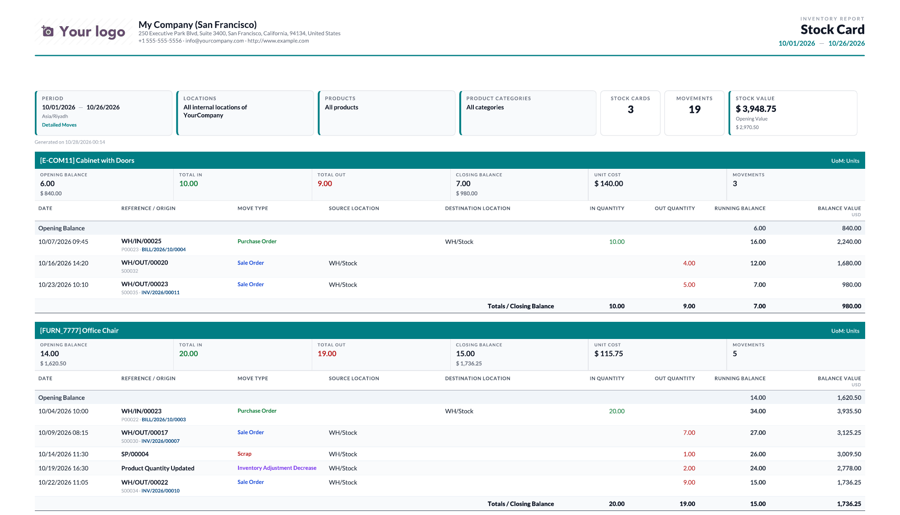
The report type you pick in the wizard drives all three outputs. Daily, weekly or monthly totals print as a compact five-column card; Full Period Totals fit a whole product range on one page.
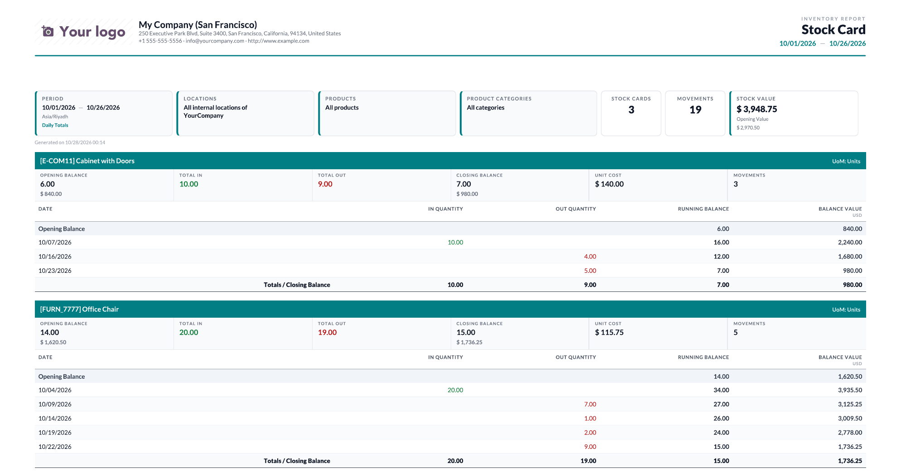
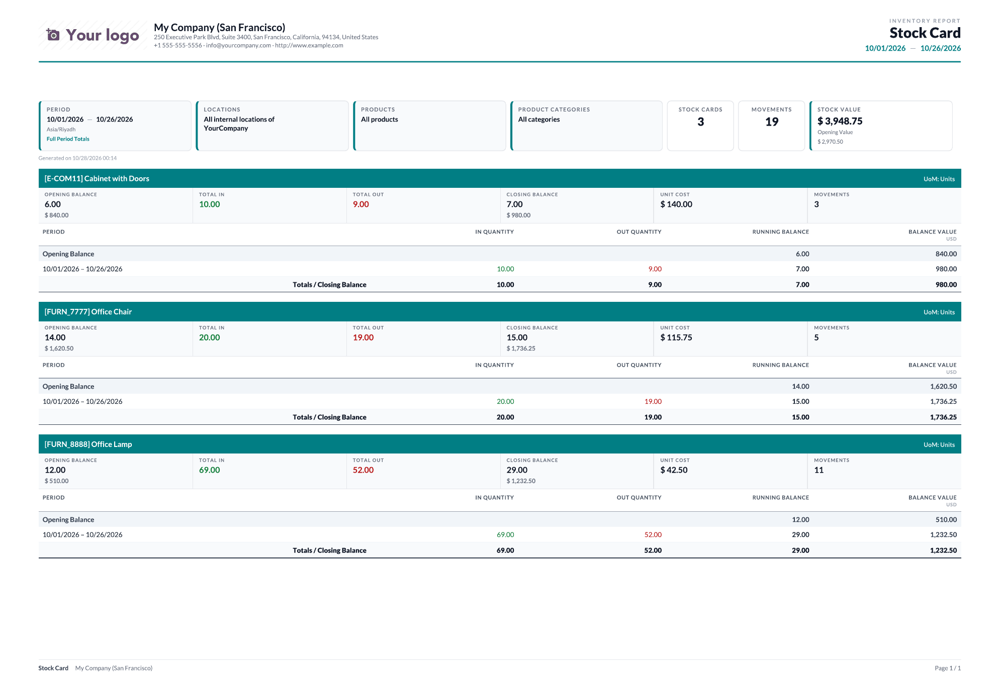
Arabic translation of every term (wizard, menu, web page, PDF, Excel, messages). For right-to-left languages the PDF is mirrored, dates use Arabic month names, amounts and references stay left-to-right inside Arabic text, and the Excel sheets open right to left. Activate Arabic in Settings › Translations › Languages and set it on the user.
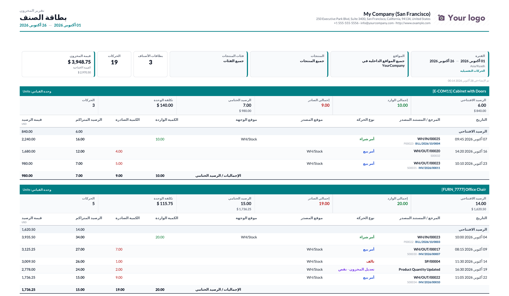
The Stock Card sheet has the same columns as the report, plus two Excel-only columns in Detailed Moves: Partner (PO vendor, SO customer, transfer Responsible, the user who applied an inventory count, the scrap creator) and Notes (the transfer’s note as plain text). Totals rows are real SUM formulas. The Summary sheet lists every card with opening, in, out, closing, moves, unit cost, opening and closing value, and a Total Stock Value row.
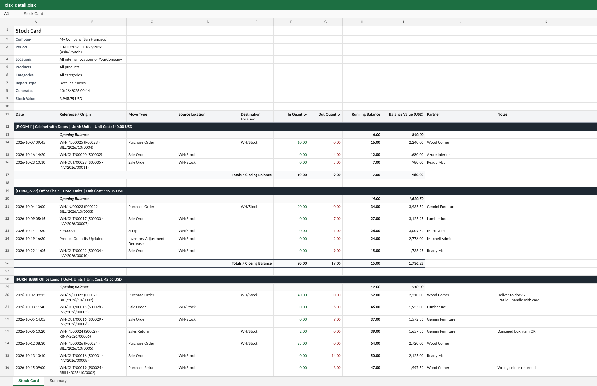
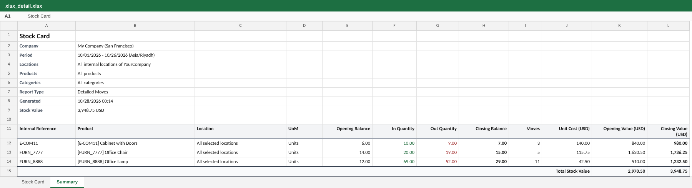
With Totals per Period the workbook holds one row per product and bucket: real dates in the Date column, numbers stored as numbers, the filters in the sheet header. Built in streaming mode, so large exports do not load the server’s memory.
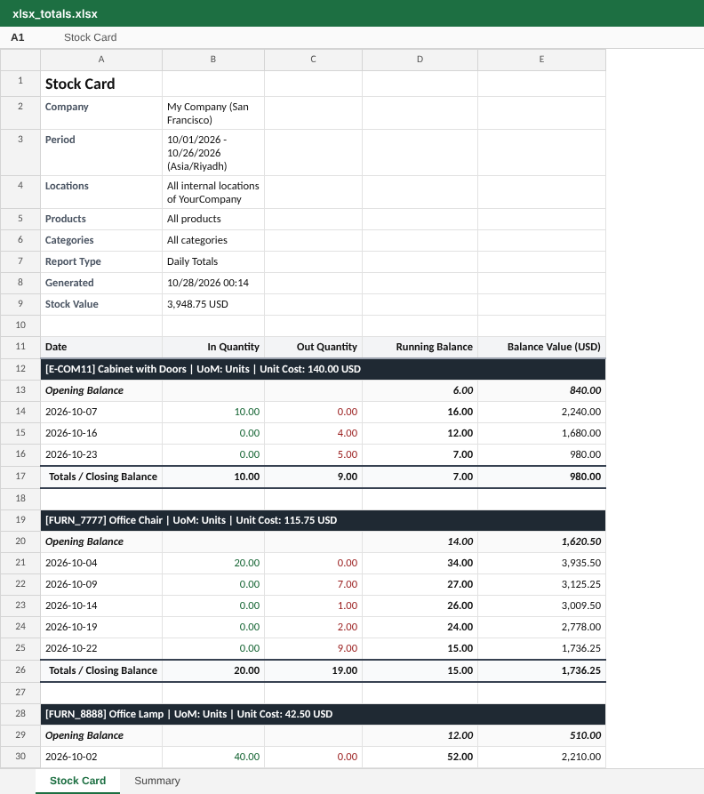
Each line gets one move type, decided in the same SQL statement; the first matching rule wins. The Excel Partner column follows the move type.
Situations that make simpler stock reports disagree with Odoo’s own quantities.
The report reads stock data only; it never writes to stock records.
| Who | Sees |
|---|---|
| Inventory / Administrator | The Inventory › Reporting › Stock Card menu (Odoo 18 shows the Reporting menu to Inventory administrators) and all outputs. |
| Inventory / User | The wizard, web page, PDF and Excel export (wizard access, Excel download route and RPC are granted to this group). |
| Users without Inventory access | Nothing: read rights on stock move lines are checked before every query, and the Excel route refuses the download. |
| Multi-company | Only companies in the user’s allowed companies; the warehouse must belong to the selected company. |
| Odoo version | 18.0, Community and Enterprise (module version 18.0.1.6.0) |
| Depends on | stock (Purchase, Sales, Manufacturing and Point of Sale links are used automatically when installed) |
| Python dependency | xlsxwriter (shipped with Odoo’s requirements) |
| Menus | Inventory › Reporting › Stock Card |
| Settings | None. Week start comes from Settings › Translations › Languages; the PDF colour from the company’s Document Layout. |
| Models | stock.card.wizard (wizard), stock.card.report.engine (SQL engine), stock.card.report.xlsx (Excel), report.stock_card_report_advanced.report_stock_card (PDF); OWL client action for the web page; route /stock_card_report_advanced/xlsx |
| Engine | One PostgreSQL statement per call (CTEs, SUM() OVER window, LATERAL invoice lookup), all values passed as parameters, ORM flushed before reading |
| Automated tests | 51 (50 in the standard run + 1 opt-in concurrency stress test), passing on Odoo 18 with Inventory only and with Purchase, Sales and Manufacturing: Opening + In − Out = Ending against Odoo’s own quantities, timezones, multi-UoM, filters, access rights, move types, invoices on real PO / SO flows, totals intervals, valuation, Partner / Notes, Arabic, PDF geometry, Excel safety, constant query count on 6,000 lines |
| Translations | Arabic (ar, used by every Arabic locale), plus a .pot template |
| Coming from 16.0 / 17.0 | No migration script needed: the module stores no business data (one transient wizard and a database index), so after your database is upgraded to 18.0 it simply runs on the existing stock moves |
| License | LGPL-3 |
Questions, a demo, or an adaptation to your own process? Get in touch.
✉ ibrahim.yahiah@gmail.com LinkedIn: Ibrahim YahiaAuthor: Ibrahim Yahia · License: LGPL-3